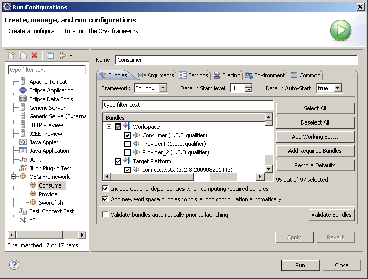

To run your Service Consumer:
-
Click
 Run
> Run Configurations...
.
Run
> Run Configurations...
.
-
Right-click OSGi Framework and click New. Type a name for your consumer configuration in the Name field.

-
Click the Bundles tab, select the Workspace check box and select the check boxes corresponding to the consumer projects you want to run.
Note: You can use a single configuration to run more than one consumer.
- In the Bundles tab, select the Target Platform check box and clear the org.eclipse.swordfish.registry check box. Running multiple instance of Service Registry on the same machine can cause a port clash.
- Click Apply. Click Run.